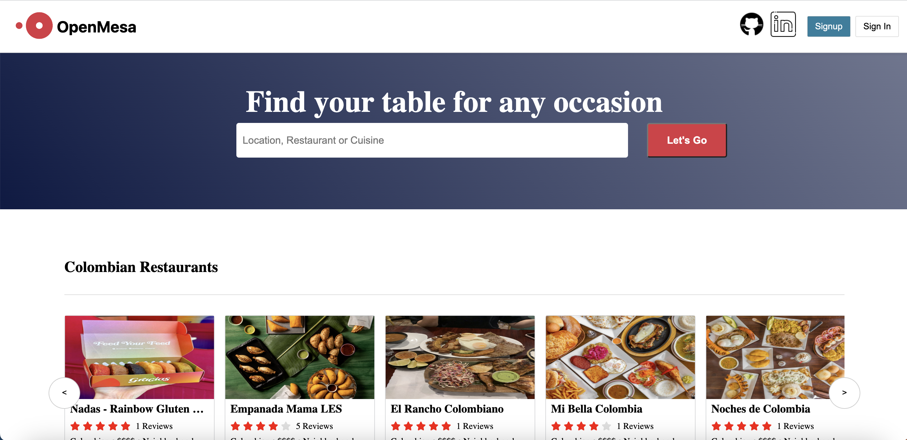
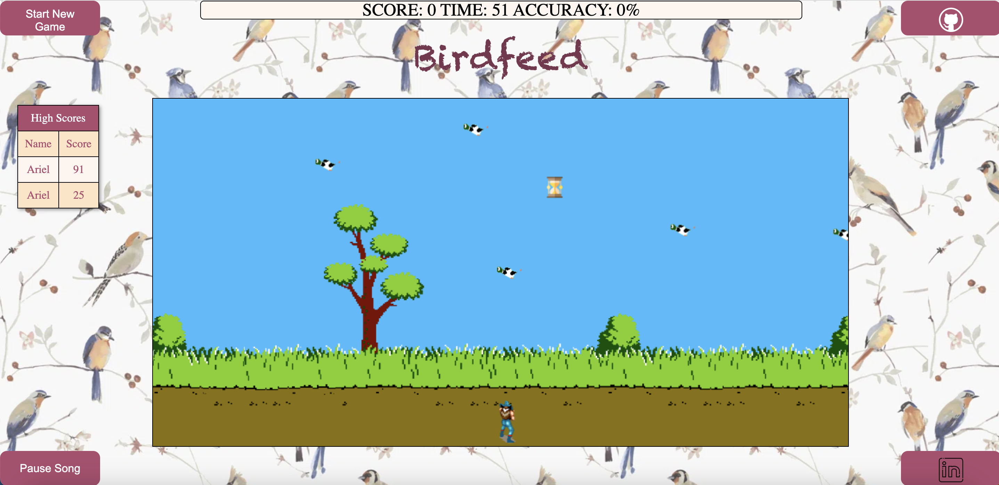
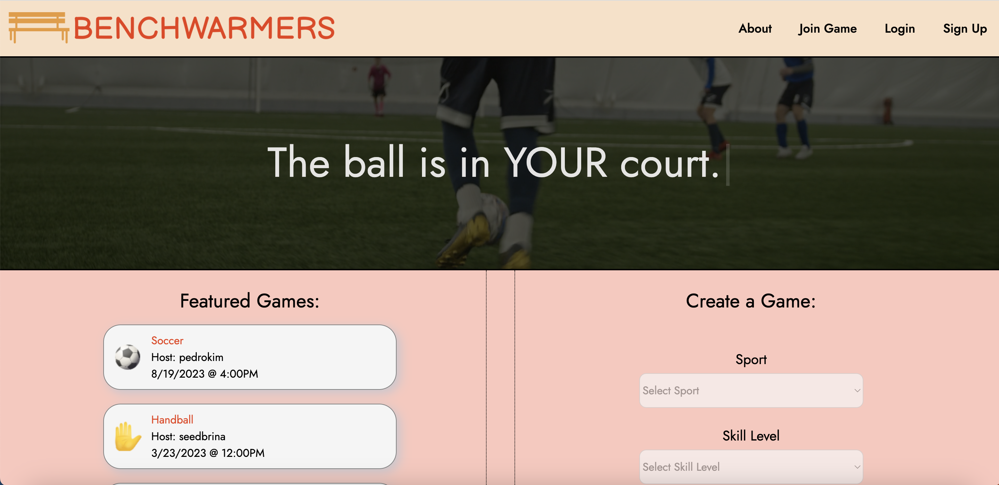

Intro
My name is Ariel Baez, I am a software engineer from Brooklyn, NY. I am skilled in project management, communication, and teamwork, as I often work with other developers to ensure that the software developed meets the needs of its users. As a software engineer, I am constantly learning and adapting to new technologies.
I take pride in my ability to solve complex problems, think critically and squash bugs. When I am not fully immersed in my code, my passions include playing sports, traveling, and trying new restaurants and food.
Projects
OpenMesa
OpenMesa is a clone of the OpenTable website. OpenTable is an online restaurant reservation platform that allows users to find and book tables at restaurants. Users can search for restaurants by a number of filters. OpenTable also provides reviews and ratings to help users make informed decisions about where to eat.

Birdfeed
Birdfeed is a game in which the objective is to shoot worms into birds mouths as they fly overhead through the screen. Feed as many birds as you can in 60 seconds to get on the leaderboard!

Benchwarmers
Benchwarmers is a website designed to connect people looking to play group pickup sports created using React-Redux, Express.js, Node.js, MongoDB, Mongoose, Google Maps API, JavaScript, HTML, and CSS.

Technologies
Throughout my educational pursuits, I have acquired a repertoire of hard technical skills and programming languages essential for constructing robust web applications. Furthermore, my prior work experiences have equipped me with a diverse array of non-coding proficiencies that complement my technical expertise. These skills include:
- Javascript
- Ruby
- React
- Redux
- Ruby on Rails
- Mongoose
- MongoDB
- SQL
- Git
- HTML5
- CSS3
- Node.js
- Express.js
I am committed to continuous learning and growth, eagerly embracing new technologies and expanding my knowledge to stay up-to-date in the ever-evolving field of web development.
About
I've had an undeniable love for mathematics and technology for as long as I can remember. Since high school, becoming a software engineer was something that piqued my interest because it was a way to combine my passion for problem-solving with my fascination with the intricacies of technology.
However, life took an unexpected turn, and I've dedicated the past decade to supporting my father in managing his retail business and eventually taking the reins of my own venture. I absorbed invaluable lessons in effective leadership, operational efficiency, and fostering strong client relationships.
Despite the detour in my career path, my undeniable love for mathematics and technology never faded. Now armed with a unique blend of an entrepreneurial mindset, leadership experience, and deep technical proficiency I feel that I am well equipped to create innovative software solutions that push boundaries, solve complex problems, and make a meaningful impact in the world of technology.
Contact
If you're looking for a skilled software engineer to join your team, I'd be thrilled to contribute my expertise and help propel your organization's success. With a passion for innovation and a proven track record of delivering exceptional results, I bring a wealth of experience to the table.
I possess a deep understanding of software development and thrive in dynamic environments. I have a knack for problem-solving and a strong technical proficiency that allows me to tackle complex challenges head-on. I stay updated with the latest industry trends and advancements, continuously refining my skills and adapting to emerging technologies.
Throughout my career, I have successfully collaborated with cross-functional teams, fostering open communication and knowledge sharing. I value the collective expertise of my colleagues and believe it leads to superior outcomes. I take great pride in developing innovative software solutions that make a tangible impact.
I'm eager to join a team that shares my commitment to excellence and values continuous learning. By combining our efforts, we can forge new paths, overcome industry challenges, and achieve remarkable results. Let's connect and explore how we can collaborate to drive your organization's success. Don't hesitate to reach out - I'm excited to hear from you soon.